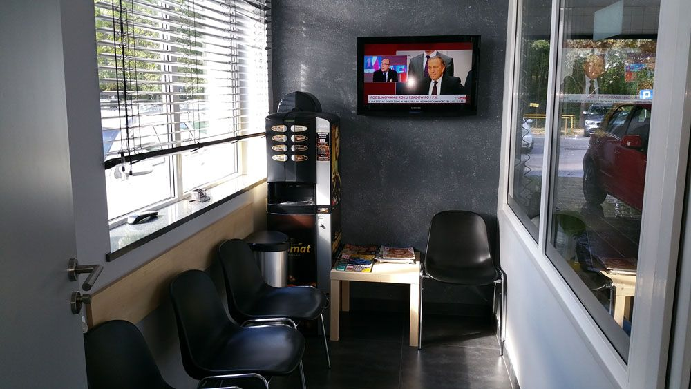
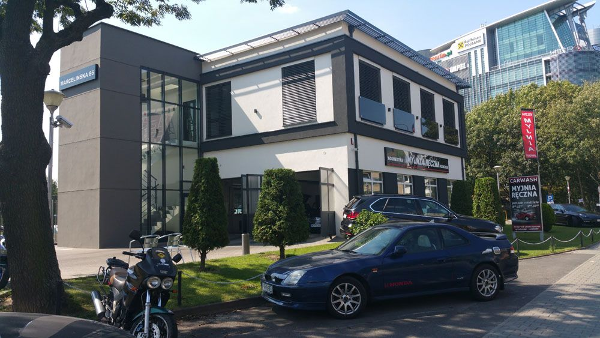

Poznańska myjnia, w której liczy się dokładność
Od 25 lat zajmujemy się ręcznym myciem i kosmetyką samochodową przy ul. Marcelińskiej w Poznaniu — dla osobówek, aut sportowych, dostawczych, kamperów, motocykli, skuterów i quadów.
25 lat doświadczenia w ręcznej pielęgnacji aut, pod jednym dachem
Od 25 lat zajmujemy się ręcznym myciem i pełną kosmetyką samochodową — przyjmujemy samochody osobowe, sportowe, dostawcze (do 2,65 m wysokości), kampery, motocykle, skutery i quady.
Nie korzystamy z automatów ani myjni bezdotykowych. Każdy element — od karoserii, przez felgi, po tapicerkę — czyścimy ręcznie, dzięki czemu efekt jest dokładniejszy, a lakier bezpieczny.
Na miejscu mamy bezpłatny parking, a klienci myjni mają do dyspozycji poczekalnię, w której — gdy nasz zespół zajmuje się autem — można napić się kawy i obejrzeć telewizję. Wolny czas spożytkują Państwo na chwilę relaksu w miłej atmosferze.
Zaplanuj wizytę

Dlaczego unikamy automatów
Ładna technologia mycia automatycznego i bezdotykowego nie zagwarantuje 100% jakości mycia. Warto pamiętać, że myjnia automatyczna i bezdotykowa pozostawia wiele miejsc niedoczyszczonych i niedokładnie osuszonych.
Mycie ręczne zyskuje coraz większą popularność — szczególnie w kontekście umacniającego się poglądu o rysowaniu lakieru przez szczotki myjni automatycznych oraz matowieniu lakierów wodnych, powszechnie stosowanych dziś ze względów ekonomicznych.
Natomiast w myjniach bezdotykowych używane są środki o bardzo dużym stężeniu chemicznym, co z biegiem czasu powoduje matowienie i śniedzenie elementów aluminiowych. Dlatego stawiamy wyłącznie na pracę rąk i sprawdzony sprzęt.
Pracujemy na profesjonalnym sprzęcie
Zaufane marki, które gwarantują powtarzalny efekt przy każdej wizycie.
Kärcher
Profesjonalne urządzenia myjące i odkurzacze piorące do tapicerki.
Soft99
Kosmetyki samochodowe do pielęgnacji lakieru i wnętrza.
KOCH
Chemia detailingowa najwyższej jakości.
Zapraszamy serdecznie
Wpadnij do nas na ul. Marcelińską 86 w Poznaniu — jesteśmy otwarci 7 dni w tygodniu.